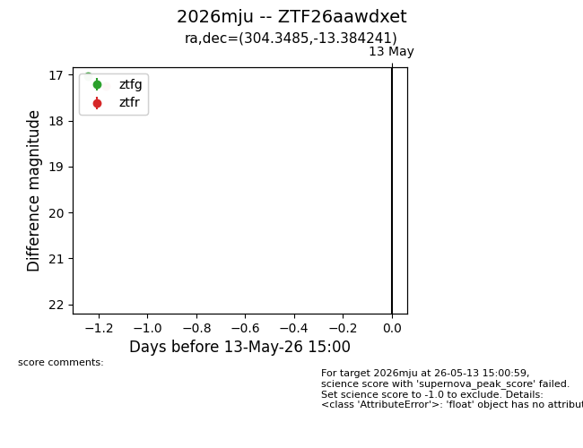
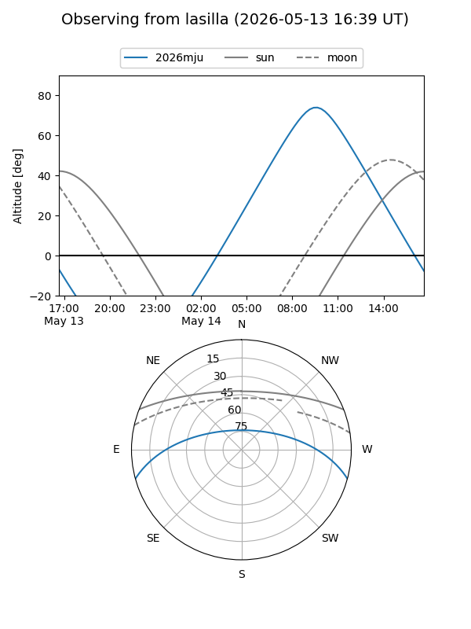
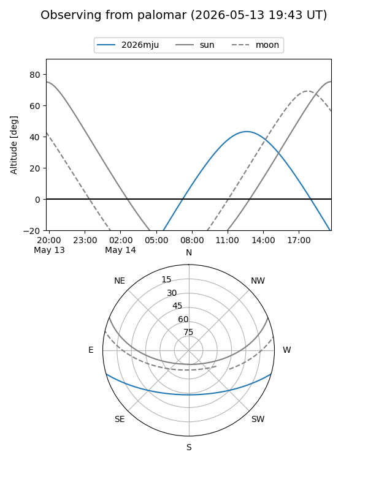
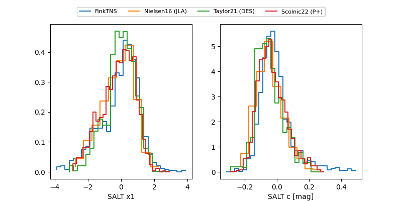

2026mju
Target 2026mju at 2026-05-13 15:06
Aliases and brokers:
FINK: link
Lasair: link
ALeRCE: link
TNS: link
YSE: link
alt names
ZTF26aawdxet (ztf,fink_ztf)
2026mju (tns,yse)
Coordinates:
equatorial (ra, dec) = 304.3485,-13.38424
equatorial (HMS+DMS) = 20:17:23.65,-13:23:03.27
galactic (l, b) = (30.1798,-25.00643)
Flags:
Photometry:
last ztfg=17.03, ztfr=17.24
1 ztfg, 1 ztfr detections
Lightcurve

Visibility


Additional plots
